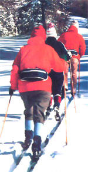

Did you ever see otters sliding on the snow ... hear the firecracker snaps as frozen trees begin to thaw ... follow the tracks of deer and fox and read the tales they tell ... or know the forest's awesome silence in a heavy snowfall? No ... but you'd like to? Well, why not put on a pair of cross-country skis and explore the winter woods?
Whether you call it Nordic skiing, x-c, cross-country, or ski-touring . . . sliding on the snow has been a popular sport for centuries (there's even a 4,000-year-old cave drawing showing a person on skis!). Alpine schussing (the downhill variety of skiing) put cross-country in the shadows from the 1930's to the 60's, but-faced with creeping trendy-ism, high prices, and l-o-n-g lift lines-many folks have recently rediscovered the low-key, low-cost joys of ski-touring. Such converts soon recognized that cross-country skiing is a superb sport for conditioning the body, too ... and better yet-unlike its downhill "cousin"-ski touring can be enjoyed without dozens of lessons and years of practice! In fact, most people have a wonderful time on their first attempt at cross-country skiing ... and by their third tour, they're regular old-timers!
Although you could learn to ski cross-country on your own, it's not a bad idea to start off with a lesson from a professional. Group instructions at Nordic ski centers will usually cost about $8.00 for an hour-and-a-half class ... and you can expect to learn all the basic skiing, turning, and stopping techniques in that brief period. You might want to join another class for your second time out if you feel that the extra training is necessary, but most folks like to get one lesson's worth of background and then practice what they've learned on their own. Later, when you're a pretty fair intermediate skier, it may be a good idea to get together a group and contract for a lesson in more advanced methods (this would also be a fine time to have your technique analyzed and any faults corrected).
Most ski areas offer a beginner's plan consisting of a group lesson plus a day's equipment rental, and such a "package deal" is by far the best way to start out in ski touring. Don't make an investment in equipment before you know whether you're going to enjoy skiing enough to justify the purchase! As a matter of fact, it's a good idea to rent equipment several times before you finally decide to buy. Try to lease different types of skis on each occasion, so you'll be able to make an informed choice when it's time to ...
Even though cross-country skiing-like most sports-was once quite uncomplicated, there's now a bewildering variety of equipment available . . . including close to two hundred different brands of skis alone! What you'll eventually buy will be determined in large part by the kind of skiing you intend to do: Do you want to race ... ski on prepared tracks only... both ski on tracks and break trails ... or ski-mountaineer and really get away from it all?
Each branch of the sport has its own gear: Racing employs fragile, very lightweight, and highly demanding skis . . . slightly sturdier "boards" are used for recreational skiing on prepared tracks ... the general all-purpose light touring runner is fine for tracks and limited bushwhacking ... and the heavier, wide, metal-edged touring skis are the choice for mountaineering. (However, most folks find that light touring skis are best for all but the very advanced or specialized skier.)
The next decision you'll have to make is whether to purchase waxable or waxless skis. In order to ski on the level ground (not to mention going uphill!) the boards under your feet will need to be able to get a grip on a substance that's usually pretty slippery . . . snow. There are two common ways of achieving such traction: by waxing the bottom of the skis, and by purchasing special boards that have their "snow-grabbers" built in.
The cross-country ski is designed to have camber... in the form of an arch built into the center of the ski that flattens out and touches the snow when weight is put on it, but lifts slightly off the snow when the weight is removed. The "kicker" zone of a waxable ski's base (the foot-and-a-half to three-foot area beneath the boot where the camber is greatest) is coated with a waxy substance. In the kick portion of the stride, when the ski is weighed down, the wax interacts with the snow crystals and grips them. During the glide portion, when the ski is unweighted, the camber lifts the wax off of the snow and no gripping takes place.
Wax is a very effective gripper ... except that snow varies in its temperature and crystalline structure, and each variant requires a different wax! Some folks love the challenge of matching up snow conditions with the proper wax ... while others loathe the hassle. If you guess right, you'll be able to kick like a mule and glide like the wind ... but guess wrong and you'll either have no traction at all or end up with a pound or two of snow gripping the soles of your skis like grim death! Which is why some folks don't bother with wax and swear by their...
Waxless skis use built-in grabbers to get a grip on the snow ... such as strips of mohair, "fish-scale" or diamond-shaped projections embossed on the ski's sole, steplike indentations, or-and this is a relatively new development-segments of mica embedded in the plastic skiing surface. However different they may sound, though, all of the above methods have one thing in common: They're unidirectional. That is, the grippers are set up so that they grab when force is applied in one direction (the kick) and slide when force is applied in the other direction (the glide). Waxless skis will allow you to travel over just about any kind of snow without special preparation, but they are-of necessity-compromises: You simply can't use such boards and expect to glide as easily (or as quickly ) as you could with properly waxed skis. In short, waxing offers the level of performance that non-waxable boards always claim to be approaching ... but waxless skis are much easier to use. Rent both types, make sure that you try doing some waxing yourself, and then make your decision.
There are two further considerations you'll have to remember when purchasing skis: First, get them long enough to reach the palm of your hand when your arm is extended over your head ... and then check the camber by sliding a piece of paper under the ski while it's resting on a hard floor. Without weight on the runner, the paper should slip freely in and out... with your weight on the board, the paper should be clamped tight (if you're a recreational skier) or be just barely able to move (if you're a more aggressive snow strider).
Cross-country skiing poles do more than just help you keep your balance ... they also contribute substantially to your ability to maintain forward motion. At one time, all Nordic poles were made of Tonkin bamboo, but science (and merchandising) marches on ... and now the choice of materials ranges from fiberglass ... through aluminum ... to the racy (and expensive) carbon fiber. Unless you're planning to compete, however, the less costly Tonkin or fiberglass poles will do fine. Choose poles that reach to your armpits ... and remember to get sturdy ones:
You'll be using 'em to stop as well as to go forward!
Bindings were once pretty well standardized, too. With the exception of ski mountaineers, who used cable clamps, most cross-country skiers secured their boards with what came to be called "Nordic Norm" bindings ... little metal devices about 75mm wide (varying from 71mm for youngsters to 79mm for "big-feet") that held the elongated toe of the ski boot between a clamp and three prongs. (The heel of the boot remains free in Nordic skiing ... so the athlete can work up a good kicking motion without banging him- or herself in the back of the head with a ski!)
Then came the 1976 Olympics, and the introduction of a special 38mm racing binding developed by Adidas. This new binding offered two advantages: Since it moved the point of flex forward of the toes, more power could be transmitted to the skis, while-at the same time-the sole of the boot could be made more rigid to improve turning ability (the loose heel that makes cross-country skiing possible also makes intricate maneuvers a bit difficult to master).
Moreover, while the 38mm binding is too narrow for purposes other than racing, the whole idea of the forward flex and increased torsional rigidity was a good one.
Consequently, many manufacturers began producing 50mm boot-binding combinations in two forms: a racing style, in which the sole of the boot is a thin 7mm ... and touring units, with soles a warmer 12mm thick. So instead of a single binding, cross-country skiers can now choose among four: the 75mm "Nordic Norm", the 50mm "Racing Norm", the 50mm "Touring Norm", and the 38mm "Adidas Norm".
What does all the variety mean to the novice? Well, not all that much ... you're still best off renting each kind at least once and selecting the type you like best. Here's a point to consider, however: If there's more than one pair of skis in the family, do try to standardize-for the sake of interchangeability-on one type.
Whatever bindings you choose, though, don't buy pile-lined boots . . . unless you plan to schuss along at a snail's pace. Cross-country skiing generates a lot of body heat, and you're better off with un lined boots that can dissipate perspiration. A soggy set of furry footwear can actually make your feet colder (because of the chilling effects of dampness) than would a plain pair of ski shoes.
And what should cross-country skiing equipment cost? Well, if you buy everything new -skis, poles, boots, and bindings-you can expect to pay between $120 and $150 if you purchase the items individually, and $90 to $125 if they're acquired as a package. But ski shops that offer rental programs often sell off their used equipment at the end of the season, and savings on such items can range between 40 and 60%. Look for sales of discontinued models, too . . . sometimes the changes between "old" and "new" are merely cosmetic, yet last year's skis can often be bought for 25-50% off list price! And-even if you pay full price for your gear-rejoice in the knowledge that a good pair of downhill skis alone costs about twice what you'll pay to outfit yourself completely with quality cross-country touring gear!
EDITOR'S NOTE: If you don't have a dealer in cross-country ski equipment near you, there are a number of mail order companies that can supply your needs. Among those whose free catalogs currently offer ski-touring equipment packages are L.L. Bean (Dept. TMEN, Freeport, Maine 04033), Eastern Mountain Sports (Dept. TMEN, Vose Farm Road, Peterborough, New Hampshire 03458), Ski Warehouse (Dept. TMEN, 215 Main Street, New Middletown, Ohio 44442), and Recreational Equipment Inc. (Dept. TMEN, P.O. Box C88127, Seattle, Washington 98188). A good source of general information is Ski magazine's annual Guide to Cross-country Skiing ($2.50 at newsstands) . . . while the best basic book on the subject is John Caldwell's Cross-Country Skiing Today (Stephen Greene Press, 1977), which is available-for $4.95 in paperback-at most bookstores.
|
 PHOTO BY JEFF COVEN A Mother Staffer and two friends break trail at the foot of New Hampshires's Mt. Washington. |
|
|